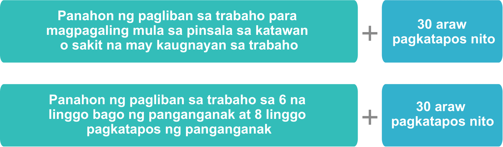
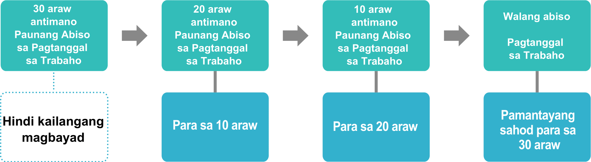
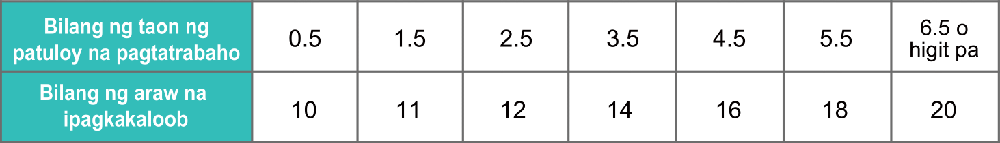
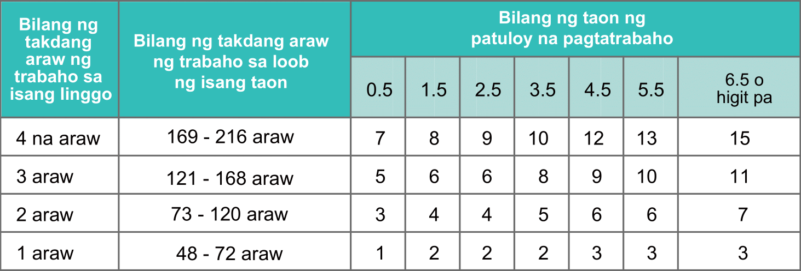
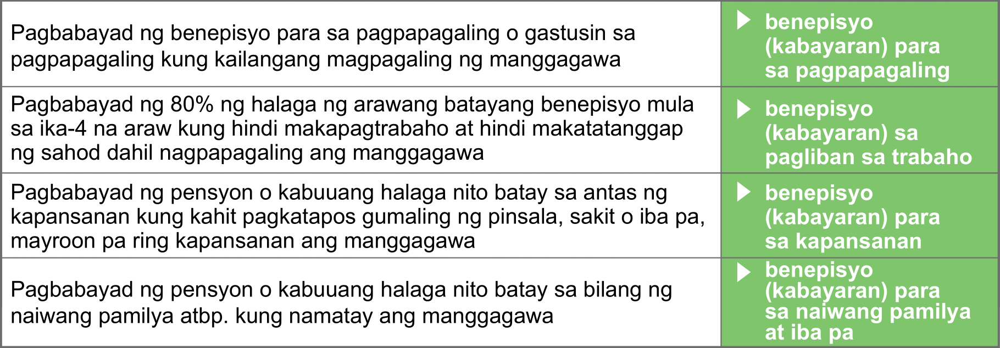
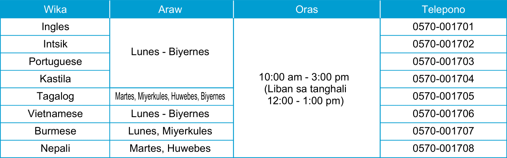
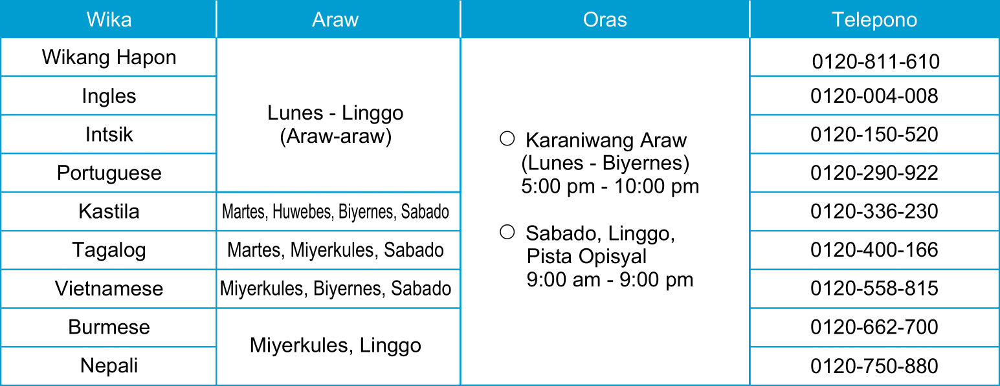
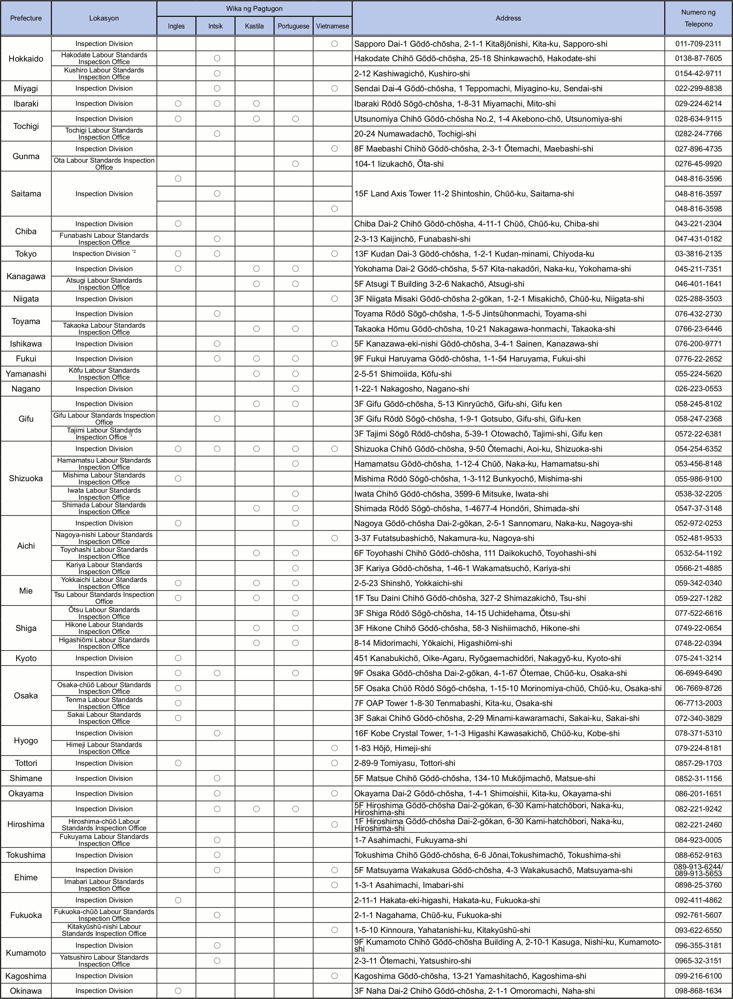

Working Conditions Handbook
Sa lahat ng mga dayuhang manggagawang nagtatrabaho sa bansang Hapon, hindi ba kayo namumroblema sa ganitong suliranin sa inyong pinagtatrabahuhan?
- Hindi matanggap ang suweldo. Kahit nagsikap magtrabaho, hindi binayaran ang sahod sa araw ng suweldo. Sabi ng presidente ng kumpanya na walang pera ngayon kaya maghintay lang ng sandali, pero hindi ako mapalagay.
- Walang anu-anong inalis sa trabaho. Walang anu-ano, sinabihan ng presidente ng kumpanya na “Hindi mo na kailangang pumasok mula bukas.” Kapag biglang inalis sa trabaho, mahihirapan sa pamumuhay.
- Hindi binibigyan ng bayad sa overtime. Araw-araw akong nag-oovertime, pero nang tingnan ko ang detalyadong tala ng suweldo, kaunti lang ang ibinigay na bayad sa overtime. Talagang hindi ko matanggap ang ganito.
- Ayaw gawin para sa akin ang proseso para sa Workers’ Accident Compensation Insurance. Hindi ako makapagtrabaho dahil napinsala ang katawan habang nagtatrabaho. Nag-aalala ako sa gastusin sa pagpapagamot at gastusin sa pamumuhay habang lumiliban sa trabaho.
- Wari bang mapipinsala ang katawan dahil sa mapanganib na gawain. May mapanganib na gawain sa pinagtatrabahuhan at kung magkamali ng kahit kaunti lang, wari bang magtatamo ng pinsala sa katawan. Gusto kong magsagawa ang kumpanya ng maayos na hakbang para sa kaligtasan.
- Hindi naiintindihan nang husto dahil binigyan lang ng kumpanya ng simpleng paliwanag nang pasalita tungkol sa kondisyon sa pagtatrabaho. Gusto kong malaman nang maayos ang kondisyon sa pagtatrabaho. Hindi naiintindihan ang kondisyon sa pagtatrabaho
Sa bansang Hapon ay mayroong iba’t-ibang batas para sa proteksyon ng mga taong nagtatrabaho, na may kinalaman sa pagsisiguro ng kondisyon sa pagtatrabaho, kalusugan at kaligtasan ng taong nagtatrabaho, pagbabayad sa pinsala kung nagkasakit o nagkaroon ng pinsala sa katawan sa trabaho o sa pagpasok sa at pag-uwi mula sa trabaho, at iba pa.
Kahit ano pa man ang inyong nasyonalidad, iniuukol ang mga batas na ito sa inyo nang pantay sa manggagawang Hapones. Tinutukoy sa pamphlet na ito ang mga pangunahing paksa ng ganitong batas sa paggawa ng bansang Hapon.
At mayroon ding institusyong pangkonsultasyon para sa mga dayuhang manggagawa, kung saan maaaring magkonsulta nang libre sa sariling wika tungkol sa problema sa paggawa. Kung sakali mang masangkot kayo sa sumusunod na suliranin o iba pa sa inyong pinagtatrabahuhan sa bansang Hapon, magkonsulta lamang sa pinakamalapit na “Tanggapan ng Konsultasyon ukol sa Kondisyon sa Pagtatrabaho para sa mga Dayuhan” o “Hotline ng Konsultasyon ukol sa Kondisyon sa Pagtatrabaho.”
CONTENTS
1. Batas ng Pamantayan sa Paggawa
2. Batas hinggil sa Kontrata sa Paggawa
3. Batas hinggil sa Minimum na Sahod
4. Batas hinggil sa Kaligtasan at Kalusugan ng mga Manggagawa
5. Batas hinggil sa Seguro ng Kabayaran sa Sakuna para sa Manggagawa
6. Madalas na Tanong
7. Patnubay sa Tanggapan ng Konsultasyon
1. Batas ng Pamantayan sa Paggawa
Mayroong nilalaman tulad ng mga sumusunod sa mga batas kaugnay sa paggawa tulad ng Batas ng Pamantayan sa Paggawa sa bansang Hapon at iba pa (sinipi).
1.01 Pantay na Pagtrato
(Artikulo 3) Bawal tratuhin ng employer ang manggagawa nang may diskriminasyon tungkol sa pasahod, oras ng trabaho at iba pang kondisyon sa pagtatrabaho dahil sa nasyonalidad, paniniwala o katayuang panlipunan nito.
1.02 Pagbabawal ng Sapilitang Pagpapatrabaho
(Artikulo 5) Bawal magpatrabaho nang sapilitan ang employer nang labag sa kalooban ng manggagawa, sa pamamagitan ng hindi makatuwirang paghihigpit sa mental o pisikal na kalayaan.
1.03 Pagbabawal ng Mapagsamantalang Pamamagitan
(Artikulo 6) Liban sa pinahihintulutan sa ilalim ng batas, bawal ang sinuman na mamagitan at magtamo ng kita sa pagpasok sa trabaho ng ibang tao.
1.04 Kontratang Labag sa Batas ng Pamantayan sa Paggawa
(Artikulo 13) Kung hindi natutupad ng kondisyon sa pagtatrabaho na pinagkasunduan ng employer at manggagawa ang pamantayang nakatakda sa Batas ng Pamantayan sa Paggawa, ang kondisyon sa pagtatrabahong nakatakda sa Batas ng Pamantayan sa Paggawa ang ipaiiral.
1.05 Panahon ng Kontrata
(Artikulo 14) Kung magtatakda ng panahon para sa kontrata sa paggawa, hindi lalampas sa 3 taon ang tagal nito.
Subalit, 1. tungkol sa kontrata sa paggawa sa pagitan ng manggagawang mayroong mataas na kaalaman bilang dalubhasa atbp, at sa kontrata sa paggawa sa pagitan ng manggagawang 60 taong gulang o higit pa, hindi lalampas sa 5 taon, at 2. tungkol sa kontrata sa paggawa na nagtatakda ng kinakailangang panahon para sa pagtatapos ng takdang proyekto (trabaho sa konstruksyon atbp.), hindi lalampas sa panahong iyon.
1.06 Malinaw na Pagtutukoy ng Kondisyon sa Pagtatrabaho
(Artikulo 15) Sa pagkuha ng manggagawa bilang tauhan, kinakailangang malinaw na tukuyin ng employer ang mga sumusunod na kondisyon sa pagtatrabaho.
Mga bagay-bagay na kailangang siguraduhing malinaw na tukuyin
1. Panahon ng kontrata sa paggawa
2. Batayan kung ire-renew ang kontrata sa paggawa na may takdang panahon
3. Lugar ng papasukang trabaho at nilalaman ng trabahong gagawin
4. Oras ng paggawa (oras ng pagsisimula at pagtatapos, kung mayroon o walang overtime, oras ng pahinga, holiday, bakasyon atbp.)
5. Sahod (halaga, paraan ng pagkukuwenta at pagbabayad, huling araw para sa pagkukuwenta at araw ng pagbabayad ng sahod)
6. Bagay-bagay kaugnay sa pagtaas ng posisyon
7. Bagay-bagay kaugnay sa pag-alis sa trabaho (kasama ang dahilan ng pagtanggal sa trabaho).
Mga bagay-bagay na kailangang siguraduhing malinaw na tukuyin kung magtatakda
8. Taong sakop sa bayad sa pagreretiro, paraan ng pagkukuwenta at pagbabayad, panahon ng pagbabayad
9. Bagay-bagay kaugnay sa bonus, ekstrang sahod atbp
10. Bagay-bagay tulad ng gastusin sa pagkain, kagamitan sa trabaho at iba pang papasanin ng manggagawa
11. Bagay-bagay kaugnay sa kaligtasan at kalusugan sa pinagtatrabahuhan, at
12. Iba pa (pagsasanay sa trabaho, kabayaran sa sakuna sa trabaho, gantimpala at parusa, paghinto sa pagtatrabaho, pagbabayad ng gastusin sa paglalakbay atbp.)
Kinakailangang malinaw na tukuyin ng employer sa kasulatan (Maaari rin sa fax email, SNS o iba pa kung hilingin ng manggagawa.) ang nakasulat sa itaas na 1 hanggang 5 at 7.
At kung kukuha ang employer ng part-time na manggagawa bilang tauhan, bukod sa mga bagay-bagay na nakasulat sa itaas, kinakailangan ding malinaw na tukuyin ang mga sumusunod na bagay-bagay sa pamamagitan ng pagkakaloob ng dokumento atbp. (Artikulo 6 ng Batas kaugnay sa Pangangasiwa ng Empleyo ng Part-time na Manggagawa)*
2. Kung mayroon o walang bayad sa pagreretiro
3. Kung mayroon o walang bonus
4. Tanggapan ng konsultasyon kaugnay sa pagpapabuti ng pangangasiwa ng empleyo atbp.
*Mula Abril 1, 2020 (2021 para sa maliliit at katamtamang laking kumpanya), kakailanganin ding malinaw na tukuyin sa manggagawang nasa empleyo sa takdang panahon.
- Maaaring i-download mula sa website ng Ministry of Health, Labour and Welfare ang paunawa sa kondisyon sa pagtatrabaho para sa mga dayuhang manggagawa.
https://www.mhlw.go.jp/new-info/kobetu/roudou/gyousei/kantoku/index.html
1.07 Pagbabawal ng Paunang Pagtatakda ng Bayad-Pinsala
(Artikulo 16) Ipinagbabawal ang kontratang nagtatakda ng multa sa paglabag ng kontrata tungkol sa hindi pagtupad ng kontrata sa paggawa, o paunang nagtatakda ng halaga ng bayad-pinsala. (Hindi nito ipinagbabawal ang pagsingil ng kabayaran para sa aktuwal na pinsalang natamo.)
1.08 Limitasyon sa Pagtanggal sa Trabaho
(Artikulo 19)
1. Hindi maaaring tanggalin ng employer ang manggagawa sa trabaho sa panahon habang lumiliban ito sa trabaho para magpagaling mula sa pinsala sa katawan o sakit na may kaugnayan sa trabaho at sa 30 araw pagkatapos ng panahong ito.
2. Maaaring lumiban sa trabaho ang babaeng manggagawa sa 6 na linggo bago ng panganganak (14 na linggo kung dalawa o higit pa ang pinagdadalantao) at 8 linggo pagkatapos ng panganganak batay sa Batas ng Pamantayan sa Paggawa, ngunit hindi maaaring tanggalin ng employer ang babaeng manggagawa sa panahon ng paglibang ito at sa 30 araw pagkatapos nito.
Limitasyon sa Pagtanggal sa Trabaho: Hindi maaaring tanggalin sa trabaho ang manggagawa sa sumusunod na panahon

1.09 Paunang Abiso sa Pagtanggal sa Trabaho
(Artikulo 20) Kung tatanggalin ang manggagawa sa trabaho, kinakailangang magbigay ng paunang abiso na hindi bababa sa 30 araw bago ng pagtanggal sa trabaho. Kung hindi magbibigay ng paunang abisong ito, kinakailangang magbayad ng pamantayang (average na) sahod para sa 30 araw. Tinatawag itong kaiko-yokoku te-ate o pataan para sa paunang abiso sa pagtanggal sa trabaho. Ang pamantayang sahod ang halagang kinalkula sa pamamagitan ng pag-divide ng kabuuang halaga ng sahod sa loob ng 3 buwan bago ng araw ng antimanong abiso ng pagtanggal sa trabaho sa kabuuang bilang ng araw sa panahong iyon.
Subalit maaaring paiksiin ang bilang ng araw para sa paunang abiso sa pamamagitan ng pagbabayad ng pamantayang sahod para sa bawat 1 araw. Halimbawa, kung babayaran ang pamantayang sahod para sa 10 araw, maaaring 20 araw bago ng pagtanggal sa trabaho ang paunang abiso, at kung babayaran ang pamantayang sahod para sa 20 araw, maaaring 10 araw bago ng pagtanggal sa trabaho ang paunang abiso.

1.10 Katibayan sa Oras ng Pag-alis sa Trabaho atbp.
(Artikulo 22) Kung humingi ang manggagawa ng sertipiko ukol sa mga bagay-bagay sa 1 hanggang 5 sa ibaba sa oras ng pag-alis sa trabaho, kailangang ipagkaloob ng employer ang kinauukulang sertipiko nang walang pagkaantala. At kung humingi ang manggagawang tumanggap ng abiso sa pagtanggal sa trabaho ng sertipiko tungkol sa dahilan ng pagtanggal sa trabaho, kailangan ding ipagkaloob ng employer ang kinauukulang sertipiko nang walang pagkaantala. Subalit bawal itala ang mga bagay-bagay na hindi hiningi ng manggagawa.
2. Uri ng trabaho
3. Posisyon sa negosyong iyon
4. Sahod
5. Kadahilanan ng pag-alis sa trabaho (kung tinanggal sa trabaho ang dahilan para rito)
1.11 Pagsasauli ng Pera at iba pang bagay na tulad nito
(Artikulo 23) Kung aalis ang manggagawa sa trabaho, kailangang bayaran ng employer ang hindi pa nababayarang sahod atbp. sa loob ng 7 araw pagkatapos itong singilin ng manggagawa.
1.12 Pagbabayad ng Sahod
(Artikulo 24) Kailangang bayaran ng employer ang sahod 1. sa salapi, 2. nang direkta sa manggagawa, 3. nang buong halaga, 4. 1 beses o higit pa buwan-buwan, 5. sa itinakdang pirmihang araw. Pinahihintulutan din ang pagbabayad ng sahod sa pamamagitan ng furikomi o pagpapadala sa account sa institusyong pinansyal.
1.13 Pataan sa Pagliban sa Trabaho
(Artikulo 26) Kung ipapaliban ang manggagawa ng employer sa kadahilanang dapat ipalagay na pananagutan nito, kinakailangang magbayad ng pataan sa pagliban sa trabaho (60% ng pamantayang (average na) sahod).
1.14 Pangunahing Patakaran sa Oras ng Paggawa, Pahinga at Holiday
(Artikulo 32, 34 at 35) Sa patakaran, kailangang pagtrabahuhin ng employer ang manggagawa sa loob ng 40 oras sa 1 linggo, at 8 oras sa 1 araw. At kailangang magbigay ng 45 minuto ng pahinga kung lampas sa 6 na oras, at 60 minuto ng pahinga kung lampas sa 8 oras, ang oras ng paggawa sa 1 araw. Bukod dito, kailangang magbigay ng 1 araw linggo-linggo, o 4 na araw ng pahinga sa loob ng 4 na linggo, o higit pa rito.
Hindi ipinaiiral ang probisyong nakasulat sa itaas sa pagsasaka, industriya ng livestock at palaisdaan.
1.15 Hangganan ng Bilang ng Pinahabang Oras na Nakatakda sa Kasunduan ng Artikulo 36 at Pangangailangan ng Pagpapalaganap nito
(Artikulo 36)
1. Kung nakipagkasundo nang naaayon sa batas ang employer sa kinatawan ng mayorya ng mga empleyado sa pag-uulat ng kasunduan sa pagitan ng manggagawa at employer kaugnay sa trabaho na lampas sa takdang oras o trabaho sa holiday (tatawaging “Kasunduan ng Artikulo 36” mula rito), at iniulat ito sa Labour Standards Inspection Office, maaaring ipagawa ang trabaho na lampas sa takdang oras at trabaho sa holiday sa loob ng nasasaklaw sa nasabing kasunduan.
2. Patakaran ang pagtatakda sa loob ng 45 oras sa 1 buwan at 360 oras sa isang taon na bilang ng pinahabang oras ng trabaho na lampas sa takdang oras na itatakda sa Kasunduan ng Artikulo 36 (kung sistema ng paiba-ibang oras ng trabaho sa sukat ng 1 taon kung saan lampas sa 3 buwan ang sakop na panahon, sa loob ng 42 oras sa 1 buwan at 320 oras sa isang taon).
3. Maaaring lumampas sa batayan ng 2. kung may bukod-tanging mga pangyayari at may pansamantalang pangangailangan bilang eksepsyon, ngunit kailangang sundin ang mga sumusunod na hangganan kahit sa ganoong pangyayari.
- Sa loob ng 720 oras sa isang taon ang taunang bilang ng oras ng trabaho na lampas sa takdang oras
- Hindi aabot sa 100 oras ang buwanang bilang ng pinagsamang oras ng trabaho na lampas sa takdang oras at trabaho sa holiday
- Sa loob ng 80 oras ang pamantayang (average na) oras para sa bawat 1 buwan kung ipagsama ang bilang ng oras ng trabaho lampas sa takdang oras at trabaho sa holiday sa panahon ng naunang na 2 buwan, 3 buwan, 4 na buwan, 5 buwan at 6 na buwan
- Sa loob ng 6 na buwan sa isang taon ang buwan kung kailan lumampas sa 45 oras sa 1 buwan ang trabaho na lampas sa takdang oras
(*) Ukol sa 3., may 5 taong pagpapaliban sa pagpapairal para sa industriya ng konstruksyon, trabaho ng pagmamaneho ng kotse, doktor at iba pa, at hindi kasama sa pagpapairal ang trabaho ng pananaliksik at pagpapaunlad ng bagong produkto atbp.
Ipinaiiral ang probisyon ng 2. at 3. sa malalaking kumpanya mula Abril 1, 2019, ngunit sa maliliit at katamtamang laking kumpanya, ipaiiral ito mula Abril 1, 2020.
4. May obligasyong ipalaganap sa mga manggagawa ang Kasunduan ng Artikulo 36 na tumutupad sa mga nabanggit na batayan sa pamamagitan ng patuloy na pagpaskil sa lugar kung saan madaling makita sa bawat lugar ng trabaho, at iba pa.
1.16 Karagdagang Sahod para sa Trabaho na Lampas sa Takdang Oras, Trabaho sa Holiday at Trabaho sa Hatinggabi
(Artikulo 37) Kung nagpagawa ng trabaho na lampas sa takdang oras, trabaho sa hatinggabi (10:00 pm hanggang 5:00 am), o trabaho sa holiday, kailangang magbayad ang employer ng karagdagang sahod na ayon sa sumusunod na porsyento ng pagdagdag.
- Karagdagang sahod para sa trabaho na lampas sa takdang oras……..25% o higit pang porsyento
- Karagdagang sahod para sa trabaho sa hatinggabi ………………………….25% o higit pang porsyento
- Karagdagang sahod para sa trabaho sa holiday……………………………….35% o higit pang porsyento
Ukol naman sa trabaho na lampas sa takdang oras na lalampas sa 60 oras sa 1 buwan, 50% ang porsyento ng karagdagang sahod. Sa kasalukuyan, ipinaiiral lamang ito sa malalaking kumpanya, ngunit ipaiiral din sa maliliit at katamtamang laking kumpanya mula Abril 2023.
1.17 Taunang Bayad na Bakasyon
(Artikulo 39 at 136)
1. Kailangang magkaloob ang employer ng sumusunod na taunang bayad na bakasyon (tatawaging taunang bakasyon mula rito) sa manggagawang patuloy na nagtrabaho nang 6 na buwan o higit pa, at pumasok sa trabaho sa 80% o higit pa ng lahat ng araw ng trabaho.
- Karaniwang manggagawa (manggagawang 5 araw o higit pa ang takdang araw ng trabaho sa isang linggo o 30 oras o higit pa ang takdang oras ng trabaho sa isang linggo)

- Manggagawang hindi umaabot sa 30 oras ang takdang oras ng trabaho sa isang linggo

2. Kung sasagabal sa wastong pagpapatakbo ng negosyo ang pagkuha ng taunang bakasyon sa araw ng itinalagang panahon ng manggagawa, kinikilala ang karapatan sa pagbabago ng panahon ng employer. At sa pamamagitan ng pakikipagkasunduan sa pagitan ng manggagawa at employer, maaaring magpasimula ng sistema ng nakaplanong taunang bakasyon para sa bilang ng araw na lampas sa 5 araw mula sa ipinagkaloob na taunang bakasyon. At sa pamamagitan din ng pakikipagkasunduan sa pagitan ng manggagawa at employer, pinapayagan ang pagtatag ng taunang bakasyon sa sukat ng oras sa loob ng saklaw ng 5 araw.
3. Pinapatawan ang employer ng obligasyong magkaloob ng 5 araw na taunang bayad na bakasyon sa loob ng 1 taon sa lahat ng manggagawang pagkakalooban ng taunang bayad na bakasyon na 10 araw o higit pa mula Abril 1, 2019.
4. Mawawalan ng bisa ang taunang bakasyon pagkatapos ng 2 taon mula sa araw na nagkaroon ng karapatan para rito. Ipinagbabawal ang pagtrato ng employer na makahahamak sa manggagawang nagkamit ng taunang bakasyon.
1.18 Tuntunin sa Trabaho at Limitasyon sa Probisyon ng Parusa
(Artikulo 89 at 91) Kinakailangan ang paglikha at pag-ulat ng tuntunin sa trabaho (tuntunin kaugnay sa oras ng paggawa, sahod, parusang pandisiplina atbp.) ng employer na patuloy na nagpapatrabaho sa 10 katao o higit pang manggagawa. May obligasyong ipalaganap sa mga manggagawa ang tuntunin sa trabaho sa pamamagitan ng patuloy na pagpaskil sa lugar kung saan madaling makita sa bawat lugar ng trabaho, at iba pa.
Kung magtatakda ng probisyon ng parusang pagbabawas sa suweldo bilang isa sa mga parusang pandisiplina sa tuntunin sa trabaho, bawal na lumampas ang halaga ng 1 beses na pagbabawas sa suweldo sa kalahati ng pamantayang (average na) sahod para sa 1 araw, o lumampas ang kabuuang halaga sa 10% ng kabuuang halaga ng sahod sa panahon ng pagbabayad ng isang sahod.
2. Batas hinggil sa Kontrata sa Paggawa
2.01 Pagtanggal sa Trabaho kung Kontrata sa Paggawa na Walang Pagtatakda ng Panahon
(Artikulo 16) Ituturing na pang-aabuso ng karapatan at walang bisa ang pagtanggal sa trabaho nang walang obhetibong makatuwirang dahilan at hindi maaaring kilalaning nararapat ayon sa kalakarang panlipunan.
2.02 Pagtanggal sa Trabaho kung Kontrata sa Paggawa na May Takdang Panahon
(Artikulo 17) Ukol sa kontrata sa paggawa na may pagtatakda ng panahon, kung walang hindi maiiwasang kadahilanan, hindi maaaring tanggalin ng employer ang manggagawa sa kanyang trabaho sa loob ng panahon ng kontratang iyon. Mahigpit na pagpapasyahan ang bisa ng pagtanggal sa trabaho kaysa sa kontrata sa paggawa na walang pagtatakda ng panahon.
2.03 Pagpapalit sa Kontrata sa Paggawa na Walang Takdang Panahon
(Artikulo 18) Kung paulit-ulit na ini-renew nang lampas sa total na 5 taon ang kontrata sa paggawa na may takdang panahon sa pagitan ng parehong employer, maaari itong ipagpalit sa kontrata sa paggawa na walang takdang panahon ayon sa paghiling ng manggagawa.
2.04 Pagtatapos ng Pagpapatrabaho sa Manggagawang Kinontrata sa Paggawa na May Takdang Panahon
(Artikulo 19) Sa patakaran, matatapos ang kontrata sa paggawa na may takdang panahon kapag nagwakas ang panahon ng kontrata. Ngunit kung walang obhetibong makatuwirang dahilan, at hindi maaaring kilalaning nararapat ayon sa kalakarang panlipunan ang pagtanggi ng employer sa paghiling mula sa manggagawa para sa pag-renew ng kontrata, ituturing na tinanggap ng employer ang paghiling ng kontrata na pareho sa dating kondisyon sa pagtatrabaho.
3. Batas hinggil sa Minimum na Sahod
3.01 Uri ng Minimum na Sahod
(Artikulo 9 at 15)
1. Minimum na Sahod ayon sa Rehiyon: Ito ang siguradong itinatakdang minimum na sahod sa bawat prefecture. Ipinaiiral ito sa lahat ng manggagawang nagtatrabaho sa lugar ng negosyong nasa loob ng kinauukulang prefecture, anuman ang industriya o uri ng hanapbuhay.
2. Tiyak na Minimum na Sahod: Ito ang minimum na sahod na itinakda para sa tiyak na industriya
3.02 Bisa ng Minimum na Sahod
(Artikulo 4 at 6)
1. Kailangang bayaran ng employer ang manggagawa ng sahod na katumbas o higit sa minimum na sahod.
2. Kahit magkasunduan ang manggagawa at employer sa kontrata sa paggawa na magbabayad ng sahod na hindi umaabot sa minimum na sahod, walang bisa ang halaga ng sahod na iyon. Sa ganitong pangyayari, ituturing na nakipagkontrata na magbabayad ng sahod na pareho ang halaga sa minimum na sahod.
3. Kung ipinaiiral nang sabay ang minimum na sahod sa rehiyon at ang tiyak na minimum na sahod, ipaiiral ang mas mataas na minimum na sahod.
4. Ipaiiral ang minimum na sahod na ipinaiiral sa lugar kung saan ipinadala ang dispatch worker.
4. Batas hinggil sa Kaligtasan at Kalusugan ng mga Manggagawa
4.01 Hakbang para sa Pag-iwas sa Panganib at Peligro sa Kalusugan
Kinakailangang gumawa ang nagpapatakbo ng negosyo ng hakbang na nakatakda sa mga batas tulad ng paglalagay ng aparatong pangkaligtasan, pagpapasuot ng gamit na pamproteksyon, pagtuturo ng wastong paraan ng paggawa ng trabaho atbp, upang maiwasan ang panganib o peligro sa kalusugan ng manggagawa.
4.02 Edukasyon sa Kaligtasan at Kalusugan
(Artikulo 59) Kailangang maglaan ang nagpapatakbo ng negosyo ng kinakailangang edukasyon sa kaligtasan at kalusugan kung kukunin ang manggagawa bilang tauhan o ililipat ito sa ibang lugar sa trabaho, at maglaan ng edukasyon kung magpapatrabaho ng mapanganib o nakapipinsalang gawain na nakatakda sa mga batas.
4.03 Limitasyon sa Trabaho
(Artikulo 61) Bawal magpatrabaho ang nagpapatakbo ng negosyo ng gawaing nakatakda sa mga batas tulad ng pamamahala sa mapanganib na bagay at nakapipinsalang bagay, liban sa manggagawang may lisensya o kwalipikasyon para rito.
- Pagpapatakbo ng crane (5 ton o higit pa ang bigat ng mabubuhat pataas)
- Pagpapatakbo ng mobile crane (1 ton o higit pa ang bigat ng mabubuhat pataas)
- Slinging operation (kaugnay sa crane na 1 ton o higit pa ang bigat ng mabubuhat pataas)
- Pagpapatakbo ng forklift at iba pang makinang ginagamit sa paghahakot ng kargada (1 ton o higit pa ang maximum na bigat)
- Gas welding
- Pagpapatakbo ng sasakyang makina para sa konstruksyon (3 ton o higit pa ang bigat ng makina) at iba pa
4.04 Pagsusuri ng Kalusugan
(Artikulo 66) Kailangang magsagawa ang nagpapatakbo ng negosyo ng pagsusuri ng kalusugan ng manggagawa ukol sa mga bagay-bagay na nakatakda sa mga batas, sa oras ng pagkuha sa manggagawa bilang tauhan at sa bawat panahong nakatakda sa batas.
- Pangkalahatang pagsusuri ng kalusugan… pagsasagawa ng pagsusuri ng kalusugan ng manggagawa sa oras ng pagkuha nito bilang tauhan, regular na panahon (1 beses sa loob ng 1 taon*) at iba pa
*Ukol sa manggagawang gumagawa ng trabaho sa hatinggabi atbp, pagsasagawa 1 beses sa oras ng paglilipat sa ibang lugar sa trabaho at tuwing 6 na buwan
- Bukod-tanging pagsusuri ng kalusugan… pagsasagawa ng pagsusuri ng kalusugan ukol sa bukod-tanging bagay-bagay sa manggagawang gumagawa ng trabahong kaugnay sa nakapipinsalang bagay*, sa oras ng pagkuha nito bilang tauhan, paglilipat sa ibang lugar sa trabaho at tuwing takdang panahon
*Isasagawa rin ukol sa manggagawang pinagawa ng trabahong may kaugnayan sa asbestos atbp, at kasalukuyang pinagtatrabaho.
4.05 Pamamatnubay sa Pakikipanayam
(Artikulo 66-8) Kailangang magsagawa ang nagpapatakbo ng negosyo ng pamamatnubay sa pakikipanayam ng doktor upang maiwasan ang peligro sa kalusugan dulot ng labis na pagtatrabaho sa manggagawang lampas sa 80 oras sa isang buwan ang oras ng paggawa na lampas sa 40 oras sa isang linggo.
4.06 Obligasyon ng Manggagawa
(Artikulo 26) Kailangang sundin ng manggagawa ang kinakailangang bagay-bagay bilang pagtugon sa mga hakbang na itong ginawa ng nagpapatakbo ng negosyo.
5. Batas hinggil sa Seguro ng Kabayaran sa Sakuna para sa Manggagawa
Kung magkapinsala sa katawan, mamatay o iba pa ang manggagawa dahil sa sakuna sa pagtatrabaho o sakuna sa pagpasok sa at pag-uwi mula sa trabaho, sa sistema ng seguro para sa sakuna sa trabaho, ibibigay ang sumusunod na benepisyo batay sa pagsingil ng manggagawang naging biktima ng sakuna o ng naiwang pamilya ng manggagawa.

6. Madalas na Tanong
Q1. Kailangan bang siguraduhing magtakda ng panahon ng kontrata sa kontrata sa paggawa? At maaari bang i-renew ang kontrata sa oras ng pagwawakas ng panahon ng kontrata?
Q2. Nagtatrabaho ako sa panahon ng kontrata na 3 taon. Sinabihan ako ng employer na kung aalis ako sa trabaho bago magwakas ang panahong ito, magbabayad ako ng multang 500,000 yen. Totoo bang kailangang magbayad nito?
Q3. Lumiliban ako sa trabaho para sa pagpapagamot dahil nagkapinsala sa katawan sa aksidente sa pinagtatrabahuhan, ngunit tinanggal ako sa trabaho sa dahilang nagigipit daw ang pangasiwaan ng kumpanya. Pinapayagan ba ang ganitong pagtanggal sa trabaho?
Q4. Narinig kong may kasong ipinagbabawal ang pagtanggal sa trabaho ng manggagawa bukod sa pagliban para sa pagpapagaling sa sakuna sa pagtatrabaho, panahon ng pagliban bago at pagkatapos manganak at 30 araw pagkatapos nito. Anong mga kaso ito?
Answer: Ipinagbabawal ayon sa batas ang pagtanggal sa trabahong sumasailalim sa sumusunod:
- Pagtanggal sa trabaho dahil sa nasyonalidad, paniniwala o katayuang panlipunan
- Pagtanggal sa trabaho dahil sa pag-report ng manggagawa sa Labour Standards Inspection Office, at paghingi ng tulong sa Prefectural Labour Bureau para sa paglutas ng indibidwal na tunggaliang kaugnay sa paggawa
- Pagtanggal sa trabaho dahil miyembro ng unyon ng manggagawa, o dahil gumawa ng makatuwirang kilos ng unyon ng manggagawa
- Pagtanggal sa trabaho dahil babae, o dahil nagpakasal, nagdadalantao, nanganak ang babae, o lumiban sa trabaho bago at pagkatapos ng panganganak
- Pagtanggal sa trabaho dahil humiling ng pagliban para sa pag-aalaga ng anak at pagliban para sa kaigo o caregiving, o dahil lumiban para sa pag-aalaga ng anak o sa caregiving
▸Sanggunian ang 1.08
Q5. Mababayaran ba ang sahod na hindi pa sumasapit ang araw ng pagbabayad sa oras ng pag-alis sa trabaho?
Q6. Sinabihan akong walang pasok ng 1 linggo sa pabrika dahil walang trabaho, ngunit makakatanggap ba ako ng kabayaran para sa sahod sa panahong ito?
Q7. Sa karaniwan, nagtatrabaho ako ng 8 oras sa 1 araw, ngunit 13 oras o higit pa sa 1 araw kapag busy ang trabaho, at minsan pinagtatrabaho ako ng lampas ng alas 10 ng gabi. Kahit sa ganitong kaso, binabayaran lamang ako ng minultiplikang oras ng pagtatrabaho sa orasang suweldo para sa 1 oras na 1,200 yen. Wala bang problema dito?
Q8. Nang humingi ako sa kumpanya ng 3 tuloy-tuloy na araw ng taunang bayad na bakasyon, sinabihan ako ng kumpanya na hindi mapahihintulutan ang pagkuha ng taunang bakasyon dahil patuloy ang kakulangan sa tauhan. Wala bang problema dito?
Q9. Sinabihan ako ng empleyadong nakatatanda o nauna sa akin na magpatakbo ng forklift sa pabrika. Maaari ba akong magpatakbo nito kahit wala akong partikular na lisensya o kwalipikasyon para rito?
Q10. Hindi ako makapagtrabaho dahil nagkapinsala ako sa katawan habang nagtatrabaho. Binabayaran ng kumpanya ang gastusin sa pagpapagamot, ngunit hindi ako nakakatanggap ng kabayaran para sa sahod sa panahong lumiliban ako sa trabaho.
Answer: Ipinaiiral ang seguro para sa sakuna sa trabaho sa lahat ng manggagawa kasama ang mga dayuhang manggagawa. Sa seguro para sa sakuna sa trabaho, kung hindi makapagtrabaho at hindi makatanggap ng sahod dahil nagpapagaling para sa pinsala sa katawan o sakit na natamo sa pagtatrabaho o sa pagpasok sa o pag-uwi mula sa trabaho, maaaring tumanggap ng benepisyo (kabayaran) sa pagliban sa trabaho mula sa ika-4 na araw ng pagliban sa trabaho.
Mangyari lamang na magkonsulta kaagad sa Labour Standards Inspection Office. ▸Sanggunian ang 5.
7. Patnubay sa Tanggapan ng Konsultasyon
Konsultasyon sa Telepono para sa mga Dayuhang Manggagawa
Nagtatag ang Ministry of Health, Labour and Welfare ng “Konsultasyon sa Telepono para sa mga Dayuhang Manggagawa” na tumutugon sa konsultasyon mula sa mga dayuhang manggagawa sa 8 wika - Ingles, Intsik, Kastila, Portuguese, Tagalog, Vietnamese, Burmese at Nepali.
Sa “Konsultasyon sa Telepono para sa mga Dayuhang Manggagawa,” nagsasagawa ng patnubay sa kinauukulang institusyon at pagpapaliwanag ng batas ukol sa problema kaugnay sa kondisyon sa pagtatrabaho.
May bayad na 8.5 yen (kasama na ang buwis) sa bawat 180 segundo mula sa landline, at 10 yen (kasama na ang buwis) sa bawat 180 segundo mula sa cellphone, para tumawag at magkonsulta sa “Konsultasyon sa Telepono para sa mga Dayuhang Manggagawa.”

Hotline ng Konsultasyon ukol sa Kondisyon sa Pagtatrabaho
Isinasatupad ang “Hotline ng Konsultasyon ukol sa Kondisyon sa Pagtatrabaho” bilang proyektong ipinagkatiwala ng Ministry of Health, Labour and Welfare. Toll-free ito at maaaring tumawag nang libre mula kahit saan sa buong bansa. Maaaring gamitin ang alinman sa landline at cellphone.
Bukod sa wikang Hapon, tumutugon sa “Hotline ng Konsultasyon ukol sa Kondisyon sa Pagtatrabaho” sa konsultasyon sa 8 wika - Ingles, Intsik, Kastila, Portuguese, Tagalog, Vietnamese, Burmese at Nepali. Nagsasagawa rito ng patnubay sa kinauukulang institusyon at pagpapaliwanag ng batas ukol sa problema kaugnay sa kondisyon sa pagtatrabaho sa oras na sarado na o araw na sarado ang mga Prefectural Labour Bureau at Labour Standards Inspection Office.

Patnubay sa Lokasyon ng Tanggapan ng Konsultasyon para sa mga Dayuhang Manggagawa
Nakatalaga ang mga Tanggapan ng Konsultasyon para sa mga Dayuhang Manggagawa sa mga sumusunod na Prefectural Labor Bureau o Labor Standards Inspection Office, at tumatanggap dito ng konsultasyon kaugnay sa kondisyon sa pagtatrabaho sa wikang dayuhan.
Para sa mga detalye tulad ng araw na bukas atbp, magtanong lamang sa telepono ng kinauukulang tanggapan, o tiyakin sa portal site sa website ng Ministry of Health, Labor and Welfare: https://www.check-roudou.mhlw.go.jp/soudan/foreigner.html.
